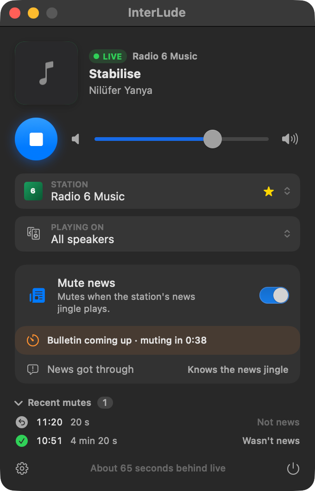
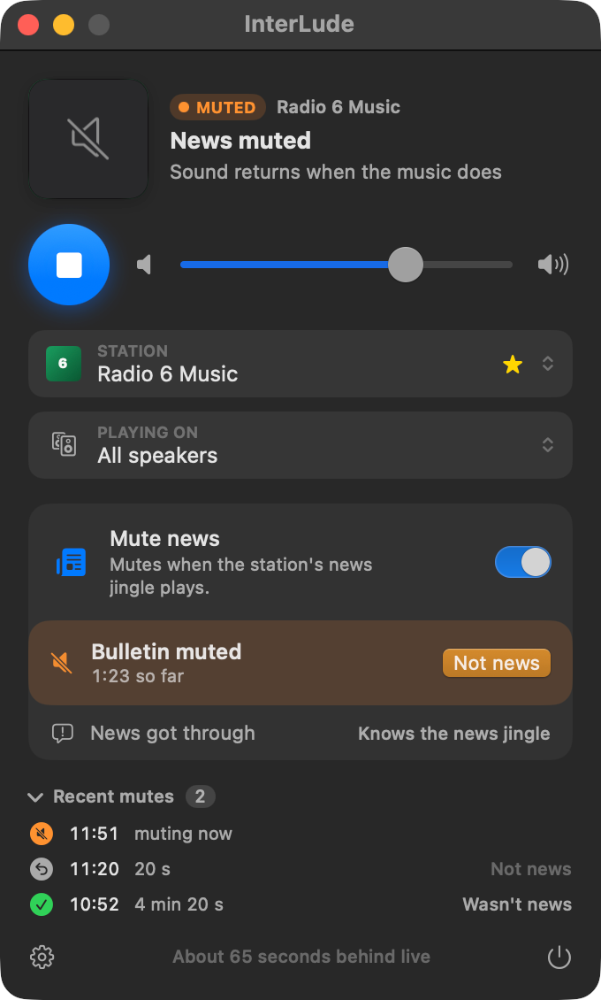
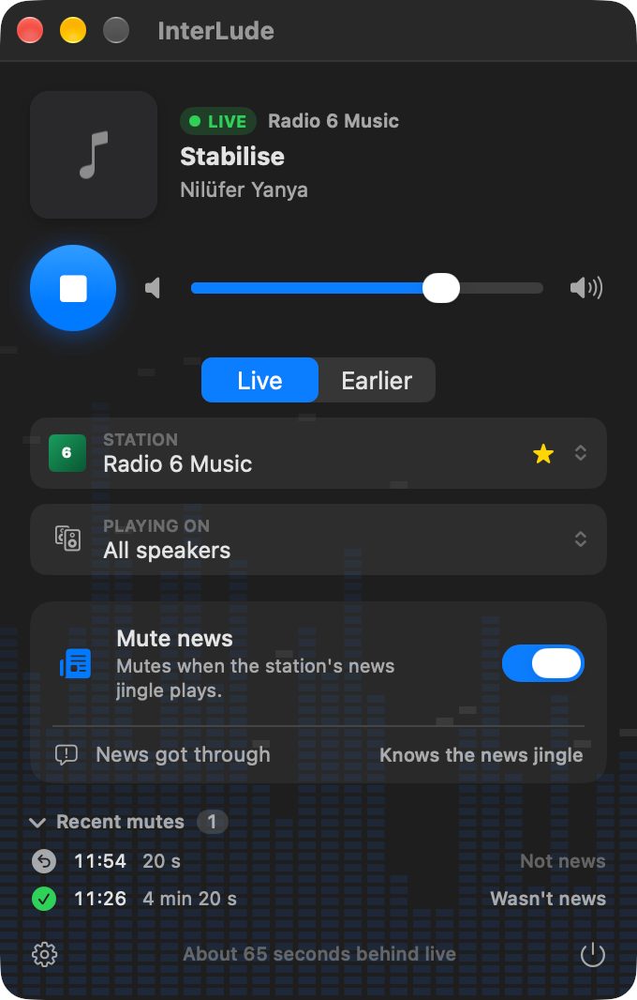
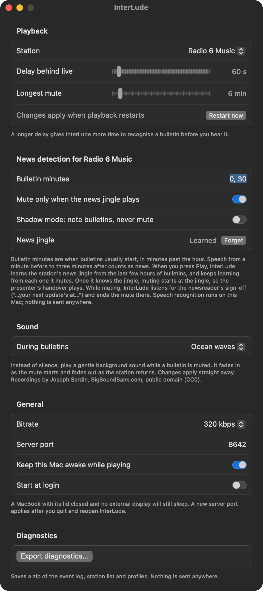

InterLude is a small macOS menu bar app that plays BBC radio to my speakers, about a minute behind live, and mutes the news bulletins on music stations. When the music comes back, so does the sound. It was built over a couple of days in October 2026. It plays on the Mac, a Chromecast or a Cast group.
Download v0.1.0 Source on GitHub
Why
I like 6 Music. What I don't need is a news bulletin every half hour, all day, every day. I'm not asking for the news to be abolished, just for it not to be the thing that interrupts flow of music.
I did ask nicely
In March 2025 I put a Freedom of Information request to the BBC with two questions. First, what is the schedule and frequency of news bulletins on 6 Music in a typical week? Second, is any metadata broadcast, over DAB or the internet streams, that tells a player a bulletin is imminent or under way? If there was a flag, a radio could simply act on it.
The reply (reference OOS2025/00474, 31 March 2025) didn't answer either question. The BBC's position was that anything it held on the subject would be held for the purposes of journalism, art or literature, which puts it outside the Act, so it hadn't searched at all. As a courtesy it did point me to the relevant condition in Ofcom's operating licence: at least 306 hours of news a year on 6 Music, with bulletins “regularly at frequent intervals throughout the day”. Which I knew, and is rather the problem.
So I took it as a personal challenge. If the BBC won't tell me when the news is on, I'll listen for it.
How it works
The trick is a short delay. InterLude fetches the station's audio stream a minute or so ahead of what I'm hearing and analyses it as it arrives. When it spots a bulletin starting, it swaps the audio for silence (or waves, a stream or birdsong, if you prefer) before I get to that point in the stream, and swaps it back when the music returns. The delay stays constant, so nothing glitches or skips.
Spotting a bulletin is harder than it sounds. A radio can't just ask whether something is news, so the app combines several clues:
- Apple's built-in sound classifier, which scores audio for speech and for music.
- The time. Bulletins sit around the hour and half hour, so sustained speech just after those marks is a strong hint.
- The news theme. The app learns the station's news jingle from the BBC's own six-hour rewind window, then listens for it.
- The sign-off. Apple's on-device speech recognition listens for the newsreader's closing words (“next update at…”) so the mute can end promptly, rather than waiting for music.
The rules are deterministic and every decision is logged, so when it gets something wrong I can see why. There's a “Not news” button for the times it does.
Seeing it run
InterLude lives in the menu bar and opens a small panel. Here it is going through one bulletin: a warning that a mute is on its way, the mute itself, and the settings behind it. (The album artwork is hidden in these pictures, since it belongs to the artists and the BBC.)







What it does
- Lives in the menu bar and plays any BBC station through the Mac, a Chromecast or a Cast group, and you can switch speaker while it plays.
- Plays a fixed time behind live: 60 seconds by default, adjustable per station.
- Mutes from the news theme to the newsreader's sign-off, so the presenter's handover and chat afterwards still play.
- Learns a station's news theme from the last few hours of broadcast the first time you play it.
- Has “Not news” and “News got through” buttons to correct it, and a log of every decision.
- Shows what's playing and a countdown to the end of a mute.
- Can play ocean waves, a woodland stream or birdsong during a mute instead of silence, fading in and out.
- Sends no telemetry. Its only network traffic is to BBC servers and to my speakers.
How well does it work?
Honestly: well enough that I've stopped hearing the news, but I haven't measured it properly. I've confirmed the mute mechanics, with a captured stream silent for exactly the length of a bulletin and normal audio on both sides, and I've listened to it catch real bulletins. The first one to be caught correctly was on 12 October. It's had its mistakes as well: it muted a presenter talking over a song, and it has muted the presenter's chat after a bulletin because the presenter's voice and the newsreader's look alike to the classifier. Each of those turned into a fix. A proper accuracy test against a week of labelled listening is still on the list.
Try it
InterLude is free and open source (MIT licence). The first release, 0.1.0, is on GitHub, with the source and the full write-up of how it was worked out in the repository. It's an early release, so expect rough edges.
- It needs an Apple silicon Mac running macOS 26 or later.
- It isn't notarised by Apple, so the first launch needs a one-off approval in System Settings. The steps are in the README, or you can build it from source.
- BBC streams may not play outside the UK.
- Detection is tuned and tested on 6 Music. Other music stations should work but haven't been measured.
The small print
InterLude is unofficial and has no connection with the BBC. It relies on stream addresses that aren't documented and could change without warning, and the BBC could stop it working at any time. It's built with Swift and SwiftUI.